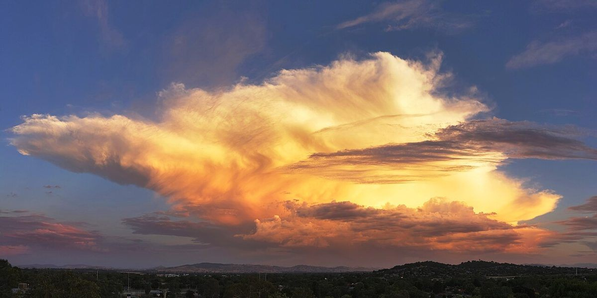
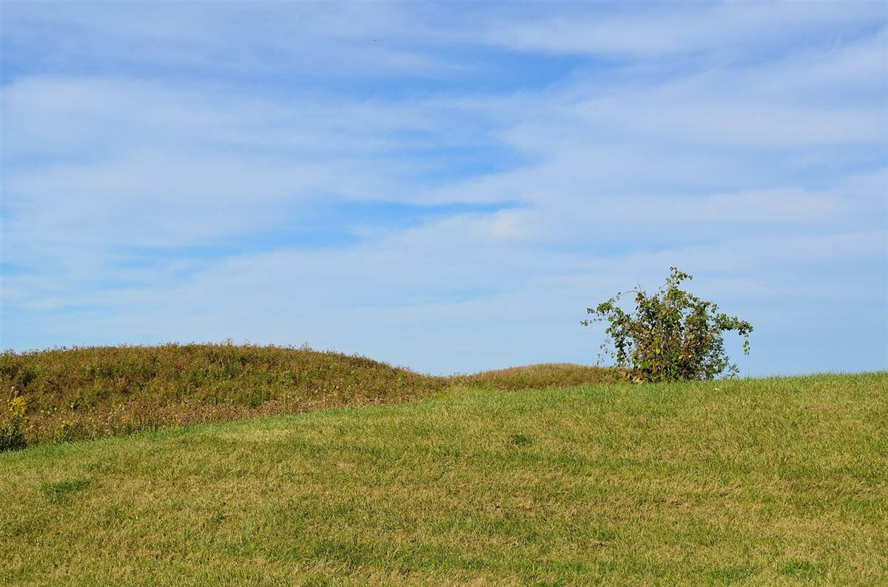
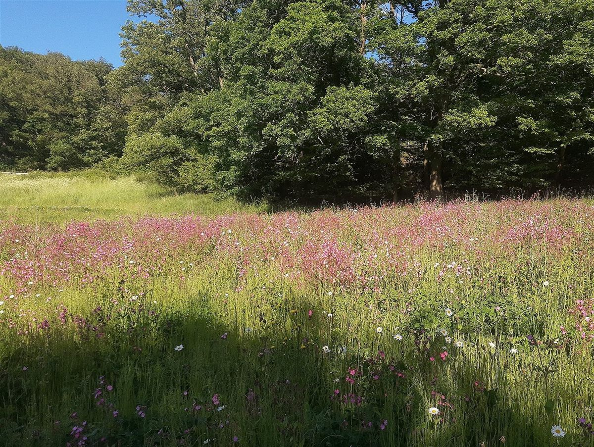

制作側の案
ひと息の余白
初めてこのページを開いた方が、場所と電話番号に迷わずたどり着けること。情報が少ないあいだは、言葉を足しすぎず、余白のあるページにしておくこと。
「ひと息の余白」は、そんなページの居心地を考えた制作側の案です。
このコンセプトは制作側の案です。お店の公式な考え方ではなく、お店の味や雰囲気を表すものでもありません。

ページ案内
イメージ写真
横にスクロールしてご覧ください。


お問い合わせ
ご来店前のご確認は、お電話またはInstagramからどうぞ。
0270-61-5887営業時間: 準備中(お問い合わせください)
群馬県伊勢崎市三室町4133-29